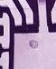
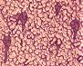

|
Internal
Package and Die Contamination
Internal package contamination
is the
presence of a foreign material, whether attached or unattached, anywhere
inside the package of the device.
Since
certain contaminants can affect the performance and reliability of the
device,
internal contaminants need to be
identified
promptly and, if necessary, traced to their root cause. Corrective
actions may then be implemented to prevent recurrence.
The
criteria
for rejecting internal
contamination depends on its location, extent, and
composition. Internal contaminants are rejected generally because of the
quality and reliability risks involved, mainly with regard to bond
pad/die corrosion and electrical performance degradation in the form of
electrical shorts, excessive current leakage between active metallizations, and surface charging.
Internal
contaminants can come from
anywhere. Common internal contaminants
include but are not limited to the following : organic residues on leadframes, die attach material on
the die; epoxy resin bleed-out on the package and bonding posts; silicon
sawdust; unetched glass on bond pads; organic contaminants containing halides such as spittle; solder
balls inside the cavity; and molten/burned lint and fibers from
production materials.
|

 |
|
Figure 1.
Internal contaminants on the die (left), die paddle (center); and die
backside (right)
|
Examples of
FA techniques
used for identifying internal contaminants include:
EDX Analysis, FTIR Analysis,
Auger Analysis, and
Ion Chromatography.
In certain cases, reliability assessment of samples with internal
contamination is required. The corrosive
effects of internal contaminants may be
accelerated
by PCT and HAST.
See also:
External Contamination;
Package
Failure Mechanisms; Failure Analysis
HOME
Copyright
©
2005.
EESemi.com.
All Rights Reserved.
|